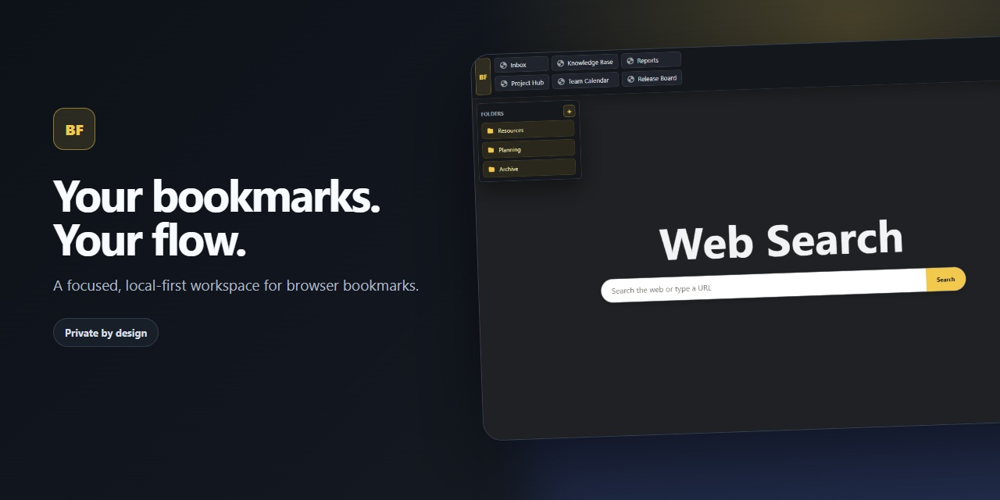

Multi-row bookmark bar
Choose up to four rows, use compact or comfortable density, and keep favorite destinations visible across regular websites.
Privacy-first Chrome extension
Turn your existing Chrome bookmarks into a customizable multi-row bar, keyboard-driven search palette, and focused new-tab workspace.

Built around your bookmarks
BookmarkFlow uses the bookmark library already managed by Chrome. Nothing needs to be imported into a separate account or service.
Choose up to four rows, use compact or comfortable density, and keep favorite destinations visible across regular websites.
Open the private-by-default search palette, type to filter your library, and move through results without leaving the keyboard.
Pin useful folders to a left or right rail while direct bookmarks stay in the horizontal strip.
Open, copy, rename, recolor, reorder, add, or delete bookmarks through clearly grouped controls.
Reduce visible bookmark names to an icon-focused presentation during recordings, presentations, and calls.
Hide the bar on selected sites and optionally suppress it on sign-in, payment, banking, and wallet-related pages.
BookmarkFlow has no analytics SDK, ad network, remote bookmark API, or developer-operated account service. Bookmark rendering and management happen locally in your browser.